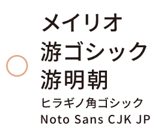

20201201
伝わるパワポ作るノウハウ
＜スライド全般＞
■メイリオ、游ゴシックがプレゼン向きのフォント

■フォントサイズの70％前後（0.7文字分）の行間をとるのが適当

■スライドやポスターなどでは、一行の文字数が多すぎるのは好ましくありません

■基本の左揃えをお勧めします。相当の理由がない限り、左揃えにしましょう
タイトルや小見出しも左揃え！

■文字サイズの5%程度の字間を入れるとよいでしょう
文字サイズが20ptなら、字間は1ptということ

■記号は字間を詰めたほうがよい
ダブルクォーテーションなどの記号の前後には不要なスペースが生じるため

■小見出しを目立たせるためには、
「太字を使う」「色を変える」「サイズを変える」「書体を変える」「下線を付ける」

■強調は色を変えるよりも「太字」がおすすめ

■箇条書きはインデントさせないこと
｢段落のはじめは１文字あける」という日本語のルールはスライドでは不要

■文字を装飾し過ぎない！
太字や色付けなど文字を目立たせる方法は「３つ以上の方法を併用しないほうがいい」

■箇条書きは行頭記号を目立たせること

■「段落」の設定の「間隔」の値（段落後の値を変更するのがふつうです）を変更するように

■1, 2文字が最後の行にはみ出すのは読みにくいのでやめろ

■数字は大きく、単位は小さく


■和文の中で使う（ ）は、和文と同じ書体の全角のカッコを使いましょう

■（ ）の代わりに「｜」（縦棒）を使う方法があります

■？や！は半角にするとよい（かも）

■コロンなどの記号もなくせるときはなくす

＜図解と描画＞
■極力文字減らし図解で複雑な情報をわかりやすく

■重要！ 塗りと線の両方に色を付けない!!


■異なる種類の図形の併用をできるだけ避ける

■楕円はなるべく使わない

■吹き出しの突出部分の形が変形させない
①PowerPoint上で「頂点の編集」をするか、
②吹き出しオブジェクトを使わずに、三角と四角を組み合わせて自前で吹き出しを作るか
のどちらかでできる

■意味もなく「矢じり」の形や「柄」の太さを変えないようにしましょう

■矢印をムダに目立たせない

■フローチャートを美しく

＜レイアウト＞
■最低でも本文の文字の１文字分の余白（右下の図で薄い赤色で示したくらいの余白）を設けるようにしましょう


■関連のある項目同士を相対的に近づける

＜配色＞
■彩度の高すぎる標準色は避ける

■必要以上に多くの色を使わない。使う色は４色まで


＜グラフ・表＞
■縦線と横線で構成された典型的な表は見栄え悪いので線は消す


■Excelのグラフは必ず編集してから使う
以下の解説に加え、グラデーションを取り去ること、プロットの塗色と枠色の両方に色を付けないこと、影を取り除くことなど

- 余計な補助線や余計な軸の範囲をなくします。
- 縦軸の目盛りも３〜５目盛あれば充分です。
- 回帰直線も点線である必要はありません。
- フォントの和文フォントでなく、欧文のフォントを使ったほうが数字が読みやすくなります。
- 枠線と塗の色は統一するか、どちらかの色を＜なし＞あるいは、＜白＞としておくとよい
- 一方の系列をベタ塗り、他方を白抜きにするというような配色をすると、さらによい
- 凡例がないこと、軸の名前がないことはデザイン以前の問題


- 「色の変更」「不要な補助線の削除」「凡例の位置の変更」「フォントの変更」
- バーとバーの間に少し間を空ける

■グラフの凡例は図中に書き込む